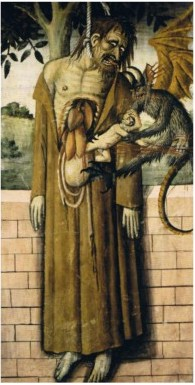
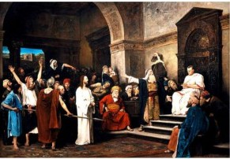

Mistranslation of Zecherian prophecy, misattribution to Jeremiah. Also, Matthew’s account differs from that in Acts1:18 “Now this man purchased a field with the wages of iniquity; and falling headlong he burst open in the middle and all his entrails gushed out.” Some artistic portrayals incorporate both legends.

Mt 27:3 Then Judas, which had betrayed him, when he saw that he was condemned, repented himself, and brought again the thirty pieces of silver to the chief priests and elders, 27:4 Saying, I have sinned in that I have betrayed the innocent blood. And they said, What is that to us? see thou to that. 27:5 And he cast down the pieces of silver in the temple, and departed, and went and hanged himself. 27:6 And the chief priests took the silver pieces, and said, It is not lawful for to put them into the treasury, because it is the price of blood. 27:7 And they took counsel, and bought with them the potter's field, to bury strangers in. 27:8 Wherefore that field was called, The field of blood, unto this day. 27:9 Then was fulfilled that which was spoken by Jeremy the prophet, saying,
And they took the thirty pieces of silver, the price of him that was valued, whom they of the children of Israel did value; 27:10 And gave them for the potter's field, as the Lord appointed me.
Zec 11:12-13
~~~~~~~
Pilate goes directly to the point of the arrest. Though we have no record of Jesus calling himself King of the Jews publicly, someone told Pilate that he had - Judas!

Mt 27:11 And Jesus stood before the governor: and the governor asked him, saying, Art thou the King of the Jews? And Jesus said unto him, Thou sayest. 27:12 And when he was accused of the chief priests and elders, he answered nothing. 27:13 Then said Pilate unto him, Hearest thou not how many things they witness against thee? 27:14 And he answered him to never a word; insomuch that the governor marvelled greatly.
~~~~~~~